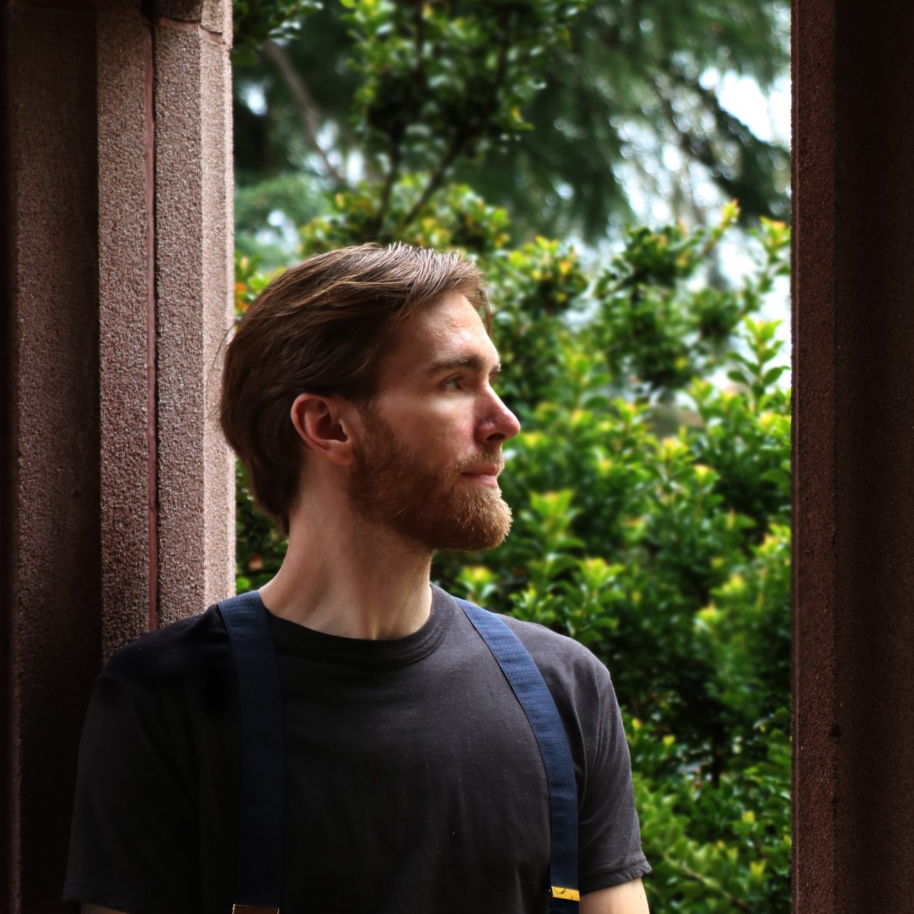

Allow Us to Introduce Ourselves
Tyler Bartholomew

Tyler’s strengths lie in laying the groundwork for projects,
keeping them on a productive path, and considering unlikely
angles. Starting from ground zero is something he has experience
with as a business owner and progressing entrepreneur. Tyler
creates infrastructure for his teams that facilitates clear
communication, shared purpose, and awareness of the design
space. He thrives on physical design projects with a strong
focus on the user’s experience.
Casey Kelly

Casey is passionate about making life work better for humans
through service and process design in the healthcare sector.
Understanding the intricacies of team dynamics, Casey excels
at grounding her team and fostering an environment where
everyone feels valued and motivated. She uses encouragement
and empowerment to orchestrate teams for maximum efficiency
and fun. Her quest to make a meaningful impact in people’s
lives is the driving force behind her work, and she constantly
seeks opportunities to contribute positively to the well-being
of others.
René Capella

René’s strongest contributions are critical analysis, managing
large systems, and conceptualizing nuanced and novel solutions.
Exhausting all options in pursuing creativity and possibility
is important to René, as demonstrated in their projects and
installation artwork. Interested in solving ‘wicked’ problems
(the most embedded, long-term issues we face), René pursues
long-term design approaches informed by discursive and
transitional design theory to meditate on market-based,
globally beneficial products. Designing systemic,
ecologically-minded, generative systems is their driving
motivation in the Human-Centered Design & Engineering capstone
project with PATH.
Sam Ferguson

Sam enjoys working with people. This may come in the form of
conducting qualitative research or managing stakeholders.
Another strength is analyzing research, both primary and
secondary. Finding a strategy that considers humans (users,
stakeholders), as well as system constraints (economic,
policy), is what he loves to do most. His hard skills lean
towards engineering, modeling, and fabricating physical
prototypes. A goal of this project would be to exercise his
ability to understand and design within complex systems.